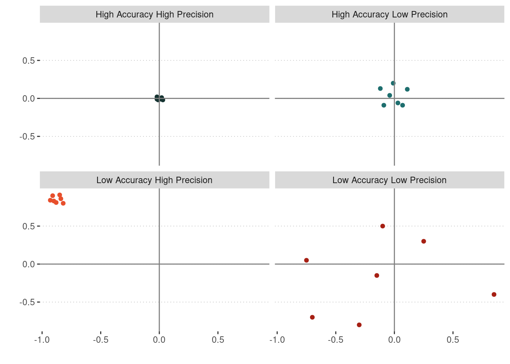

Difference Between Accuracy and Precision
Accuracy and precision are two methods that are used to measure data. The two terms are misunderstood and commonly used incorrectly.
Accuracy: how correct something is to the correct or known value. It is possible to have high accuracy and low precision
Precision: how close two or more elements are to each other. It is possible to have high precision and low accuracy

Data Accuracy and Precision
Date Data
Dates and time can be expressed using a number of different elements; year, month, week, day, hours, minutes, and seconds. The example below illustrates different ways of representing dates and time, expressing now with different degrees of accuracy, moving from year, month, week, and day, to dates with hours, minutes, and seconds.
| Very Low | Very High | |||||
|---|---|---|---|---|---|---|
| 2024-01-01 | 2024-08-01 | 2024-08-18 | 2024-08-21 | 2024-08-21 10:00:00 | 2024-08-21 10:28:00 | 2024-08-21 10:28:30 |
Number Data
The location of the Halifax International Airport Authority can be expressed in a few different ways, but lets use latitude/longitude coordinates (map location) as an example. Coordinate locations are represented as a set of two numbers, typically including decimal values. The more decimal values provided can increase the accuracy and precision of the location. The example below illustrates different ways of representing location coordinates for the Halifax International Airport Authority, with very low to very high levels of accuracy/precision.
| Very Low | Very High | ||||
|---|---|---|---|---|---|
| -64, 44 | -63.5, 44.9 | -63.51, 44.88 | -63.509, 44.881 | -63.5086, 44.8811 | -63.50861, 44.88111 |